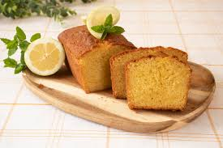

Bizcocho de yogur


Ingredientes
Preparación del bizcocho de yogur casero

- La base de esta receta es tomar como medida el vasito de yogur, lo que facilita mucho el tema de los ingredientes. Añadimos el yogur a un bol grande y lavamos el potito o envase donde viene el yogur.
- Precalentamos el horno a 200º C y untamos el molde que vamos a utilizar con mantequilla, en la base y los lados.
- Espolvoreamos con un pellizco de harina y quitamos el exceso de harina. Reservamos.
- Batimos los huevos con unas varillas, cuando empiecen a blanquear, añadimos una pizca de sal. Medimos el azúcar (recordad, son 2 vasitos) y volvemos a batir, ya tenemos la base lista. Añadimos en el bol una medida de aceite de oliva suave, la levadura química y medimos de nuevo la harina con el vasito (recordad que son 3 medidas).
- Metemos todo en el bol y batimos con unas varillas (podéis utilizar manuales o eléctricas, las que más os gusten). Debe de quedar una masa homogénea y fina.
Horneado del bizcocho

- Vertemos la mezcla en el molde, os recomiendo que sea desmontable. Esta parte la hacemos siempre con cuidado y ayudándonos de la espátula para rebañar bien el bol.
- Con el tipo de molde y el paso previo de mantequilla y harina en la base se desmoldará fácilmente. Horneamos de 30 a 35 minutos dependiendo del horno que tengáis. Tenéis que poner el futuro bizcocho en la bandeja del medio con calor arriba y abajo, sin aire, a 180º C. Si vemos que se tuesta mucho al final de la cocción, cuando queden 10 minutos tapamos con un poco de papel de aluminio.
- Importante, abrir el horno lo menos posible y al final de la tiempo de horneado pinchad con la punta de un cuchillo. Si sale limpia al pinchar en el centro del bizcocho, ya estará.
Presentación final

- Dejamos que el bizcocho se atempere un poco en el molde. Después desmoldamos, pasando un cuchillo con la hoja del revés por los bordes.
- Dejamos que se termine de enfriar sobre una rejilla para evitar que coja humedad. Listo para comer. Podéis espolvorear un poco de azúcar glass por encima, aunque es totalmente opcional.
Consejos para un bizcocho de rechupete
- Para aromatizar vuestro bizcocho lo ideal es utilizar yogur de limón porque le da un sabor especial.
- También puedes añadir ralladura de limón para dar más sabor. Es importante que sólo ralléis la parte externa del limón (la amarilla). Si llegáis a la parte blanca, le dará un amargor desagradable.

- Si queréis un bizcocho más alto y esponjoso, sólo tenéis que montar las 3 claras. Separamos las claras de las yemas con mucho cuidado. En el vaso de la batidora, montamos las claras con un pellizquito de sal, ayudándonos de las varillas eléctricas. Vamos haciendo movimientos circulares ascendentes hasta que las claras se monten al punto de nieve. Para saber si están listas, sólo hay que poner el recipiente boca abajo. Incorporamos las claras cucharada a cucharada al final del proceso, es decir cuando hayamos terminado con la harina. Nos ayudamos de una lengua o espátula de silicona para mezclar la crema muy suavemente. Siempre on movimientos envolventes, para evitar que pierda las burbujas de aire que harán que el bizcocho de yogur quede alto y esponjoso.

- Si lo queréis más liviano, podemos sustituir la harina de trigo por harina fina de maíz, la llamada maicena. Así también será apto para celiacos, pues no lleva gluten.